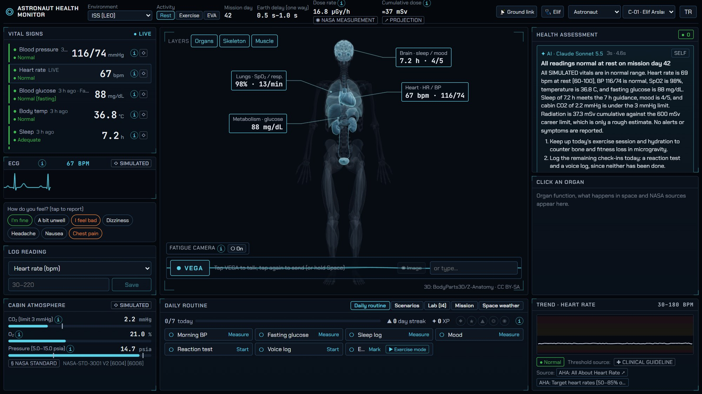
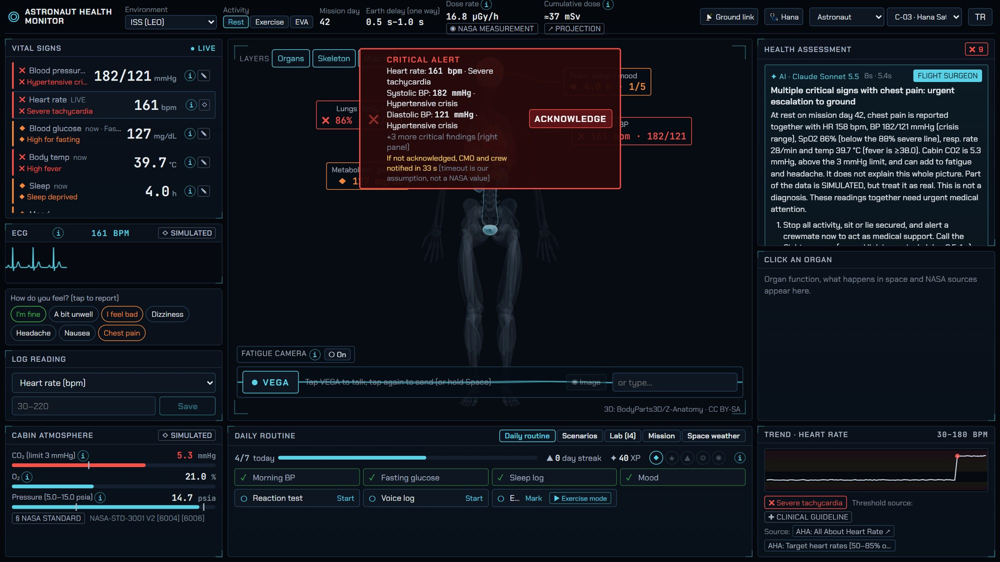
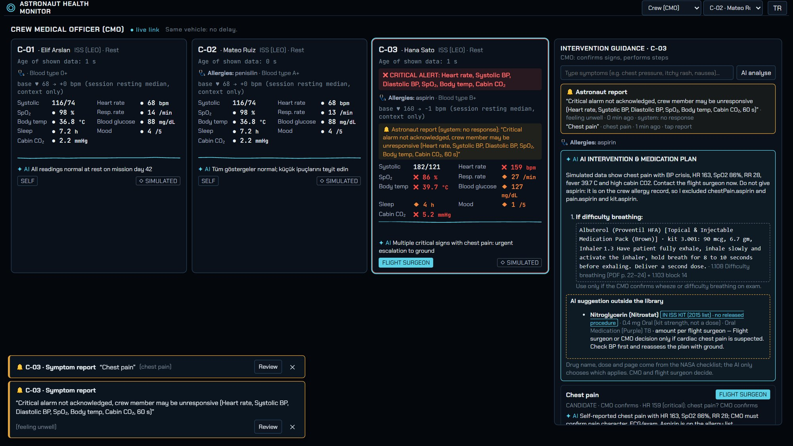
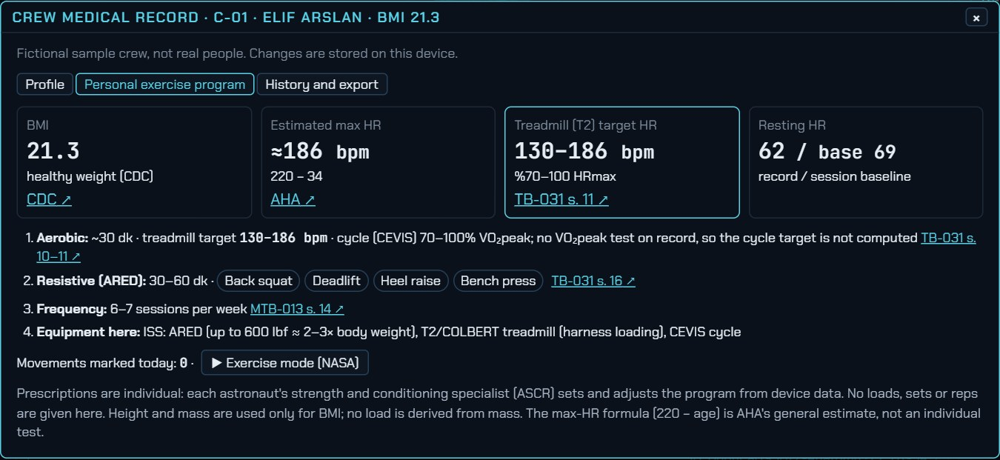
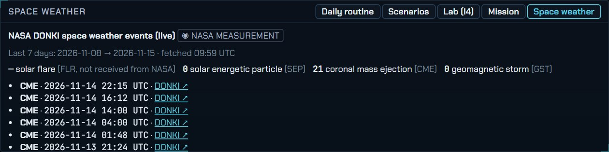
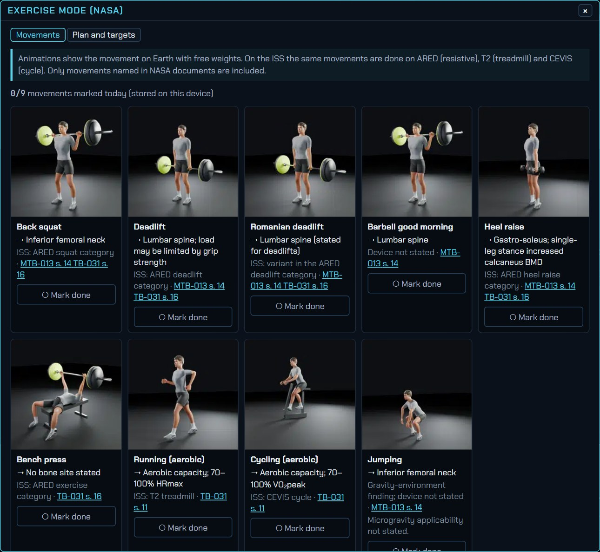

Astronaut Health Monitor
A visual, voice-enabled and fully sourced decision-support tool that lets astronauts monitor and manage their own health when Earth is minutes away.
Team: NASAlytics
Live demo: asicservices.com/nasalytics

On a Mars mission. Double it for a question and its answer. On the ISS it is under 1 second.
During loss of signal the crew is on its own. NASA's checklist tells them to begin treatment.
Radiation, isolation and confinement, distance from Earth, gravity fields, hostile closed environments.
A visual tool that helps astronauts assess their own health: a clickable body, routine prompts, gamification, charts, color coding, simple explanations and multiple mission environments.
One screen with the body, the vitals and what to do next. Decisions come from rules built on NASA thresholds; AI only explains. Every number shows its source, and nothing that is not real is presented as real.

1Clickable 3D body. Organ, skeleton and muscle layers; click an organ to see what happens in space, with the NASA source.
210 indicators: color + icon + label. Color-blind friendly; thresholds from NASA-STD-3001 and clinical guidelines.
3VEGA voice assistant. Speaks Turkish and English, logs readings, and reports symptoms to the crew on its own.
4Tap to report. One tap on "Chest pain"; the CMO and crew see it instantly.
5Daily routine + gamification. Streaks, XP, badges; reaction test, voice log, NASA exercise mode.
6Fatigue camera. Runs on the device; video never leaves it.
Only this layer raises alarms. Thresholds from NASA-STD-3001 and clinical guidelines; it runs in the browser, even without internet or AI.
13 cards: ISS emergency medical procedures, NASA JSC-48031 checklist, AHA 2024 first aid. Drug name, dose and page are verbatim from the document.
Summarizes the situation and ranks the cards. It can reference a drug only by library ID; any dose number it writes is stripped on the server.
Judges and astronauts alike can tell at a glance what is real and what is simulated.
NASA measurementNASA standardClinical guidelinePublishedProjectionAssumptionSimulatedCloud AI goes quiet; rules and cards keep working. Data is held on board and delivered to ground in order once the link returns.
If an allergy in the crew record matches a suggested drug, the line is struck through: "MATCHES RECORDED ALLERGY, DO NOT GIVE".
No loads, sets or reps for exercise (NASA leaves that to each astronaut's specialist). No risk judgement on space weather. Our own assumptions are labelled "assumption".

| ISS TEPC dose measurements data.nasa.gov | Raw 10-second measurements downloaded. The ISS baseline dose rate (16.8 µGy/h) was computed from the storm-free days of September 2017; the storm days are replayed as measured. |
| NASA OSDR RadLab API | 438 MB of raw data from Artemis I, Mars transit and Mars surface instruments, reduced to hourly means; the May 2024 Mars storm comes from here. |
| NASA OSDR OSD-569 / OSD-575 | Inspiration4: blood count and metabolic panel for 4 crew × 7 time points; each value shown against that person's own reference range. |
| NASA DONKI live API | Space weather events of the last 7 days, fetched by our server; shown with fetch time and no interpretation. |
| NASA-STD-3001, OCHMO technical briefs | CO₂, pressure, oxygen, radiation, decompression and bone-loss thresholds, read one by one and coded into the rule engine. |
| ISS emergency medical procedures, JSC-48031 | Intervention cards, medication kit, the LOS rule; with page numbers. |
| OCHMO-TB-031, MTB-013 · NASA HRP | Exercise movements and targets; the 5 hazards and organ explanations. |
Non-NASA: AHA, ADA, CDC guidelines · CSA resources · BodyParts3D / Z-Anatomy (CC BY-SA) · forge-motion (CC0). The full list is in SOURCES.md; an audit script checks that every link in the code is logged there.



Medical autonomy for Moon and Mars missions. The same approach helps on Earth: Antarctic stations, submarines, remote sites, rural healthcare.
A speaking assistant, replays of real storms, three screens with the real communication delay and, above all, a safety design in which the AI cannot write a dose.
React 19 + TypeScript + three.js (rule engine and 3D in the browser) · FastAPI + WebSocket · MediaPipe (on-device camera) · live on our own server.
Works without AI: alarms and thresholds (rule engine), radiation and lab data (NASA measurements), drugs and doses (NASA checklists), the fatigue camera (MediaPipe on the device).
What AI does: summarize the situation in plain language, rank the cards, speak. Models: Claude Sonnet 5.5 and Haiku 5.5 (text), Gemini (VEGA's voice).
Not a medical device and not a diagnosis. Vital signs are simulated and labelled as such; connecting real sensors is the next step.
asicservices.com/nasalytics · also works on phones
Source code: github.com/chuckywins/nasalytics